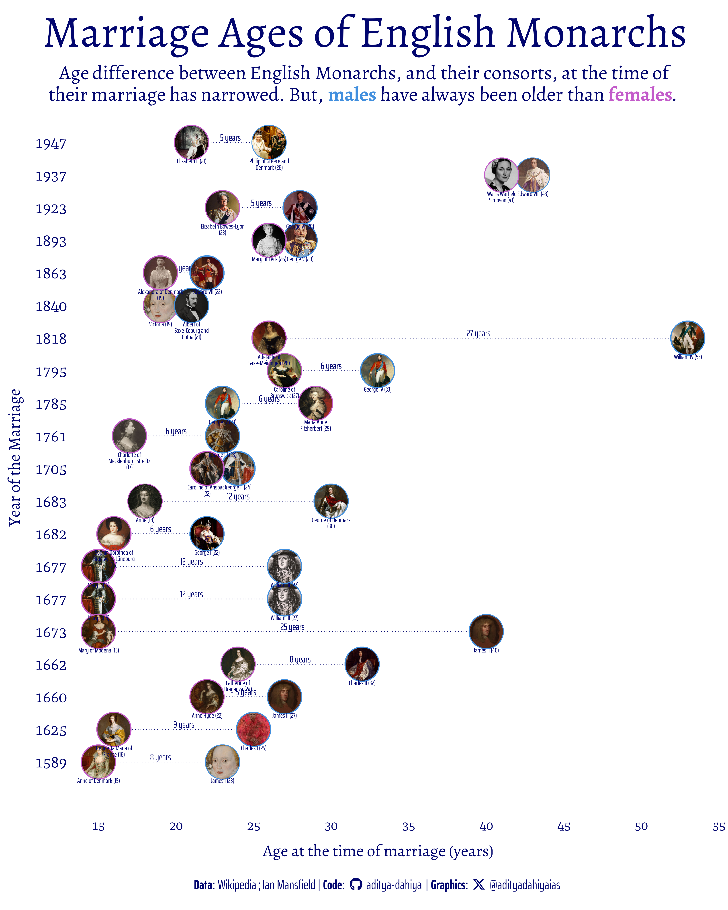

Visualizing the ages of English Monarchs at the time of marriages
#TidyTuesday
{ggimage}
Author
Aditya Dahiya
Published
August 21, 2024

Figure 1: A horizontal lollipop bar chart, showing the ages of English monarchs and their consorts. The ages are in brackets along with names, below their potrait. The age difference is written in the intervening segment. The Y-axis represents the marriage age, and the X-axis shows the ages.
How I made this graphic?
Loading libraries & data
Code
# Data Import and Wrangling Toolslibrary(tidyverse) # All things tidy# Final plot toolslibrary(scales) # Nice Scales for ggplot2library(fontawesome) # Icons display in ggplot2library(ggtext) # Markdown text support for ggplot2library(showtext) # Display fonts in ggplot2library(colorspace) # Lighten and Darken colourslibrary(seecolor) # To print and view colourslibrary(patchwork) # Combining plots# Option 2: Read directly from GitHub# english_monarchs_marriages_df <- readr::read_csv('https://raw.githubusercontent.com/rfordatascience/tidytuesday/master/data/2024/2024-08-20/english_monarchs_marriages_df.csv')
Data Wrangling
Code
# english_monarchs_marriages_df |> # slice_tail(n = 20) |> # mutate(# year_of_marriage = parse_number(year_of_marriage)# ) |> # arrange(desc(year_of_marriage))# Get Genders from ChatGPT coupled with Internet Search# Prompt: I have the following data on English monarchs, and their # consorts and their marriage ages. Can you please add a column of # gender in front of each name (i.e. two gender columns in total - # one for king/queen, and one for consort), by searching the internet# Write the output in form of an R Code to create a tibble. I want to # copy paste the code into my r-scriptdf <-tibble(king_gender =c("Female", "Male", "Male", "Male", "Male", "Female", "Male", "Male", "Male", "Male", "Male", "Female", "Male", "Female", "Male", "Male", "Male", "Male", "Male", "Male"),king_name =c("Elizabeth II", "Edward VIII", "George VI", "George V", "Edward VII", "Victoria", "William IV", "George IV", "George IV", "George III", "George II", "Anne", "George I", "Mary II", "William III", "James II", "Charles II", "James II", "Charles I", "James I"),king_age =c(21, 43, 28, 28, 22, 21, 53, 33, 23, 23, 22, 18, 22, 15, 27, 40, 32, 27, 25, 23),consort_gender =c("Male", "Female", "Female", "Female", "Female", "Male", "Female", "Female", "Female", "Female", "Female", "Male", "Female", "Male", "Female", "Female", "Female", "Female", "Female", "Female"),consort_name =c("Philip of Greece and Denmark", "Wallis Warfield Simpson", "Elizabeth Bowes-Lyon", "Mary of Teck", "Alexandra of Denmark", "Albert of Saxe-Coburg and Gotha", "Adelaide of Saxe-Meiningen", "Caroline of Brunswick", "Maria Anne Fitzherbert", "Charlotte of Mecklenburg-Strelitz", "Caroline of Ansbach", "George of Denmark", "Sophia Dorothea of Brunswick-Lüneburg", "William III", "Mary II", "Mary of Modena", "Catherine of Braganza", "Anne Hyde", "Henrietta Maria of France", "Anne of Denmark"),consort_age =c(26, 41, 23, 26, 19, 21, 26, 27, 29, 17, 22, 30, 16, 27, 15, 15, 24, 22, 16, 15),year_of_marriage =c(1947, 1937, 1923, 1893, 1863, 1840, 1818, 1795, 1785, 1761, 1705, 1683, 1682, 1677, 1677, 1673, 1662, 1660, 1625, 1589),id =1:20)plotdf <- df |>mutate(king_image =paste0("data_vizs/temp_english_monarch/king_", id, ".png" ),consort_image =paste0("data_vizs/temp_english_monarch/consort_", id, ".png" ) ) |>mutate(king_age =case_when( (king_age == consort_age) & (king_gender =="Male") ~ king_age +2, (king_age == consort_age) & (king_gender =="Female") ~ king_age -2,.default = king_age ),consort_age =case_when( (consort_age == king_age) & (consort_gender =="Male") ~ consort_age +2, (consort_age == king_age) & (consort_gender =="Female") ~ consort_age -2,.default = consort_age ) )plotdf
Visualization Parameters
Code
# Font for titlesfont_add_google("Alegreya",family ="title_font") # Font for the captionfont_add_google("Saira Extra Condensed",family ="caption_font") # Font for plot textfont_add_google("Mate SC",family ="body_font") showtext_auto()# Colours to use as background and bordersmypal <-c("#C35BCAFF", "#418FDEFF", "#02066F")bg_col <-"transparent"text_col <- mypal[3]seecolor::print_color(text_col)text_hil <- mypal[3]seecolor::print_color(text_hil)bts <-80# Caption stuff for the plotsysfonts::font_add(family ="Font Awesome 6 Brands",regular = here::here("docs", "Font Awesome 6 Brands-Regular-400.otf"))github <-""github_username <-"aditya-dahiya"xtwitter <-""xtwitter_username <-"@adityadahiyaias"social_caption_1 <- glue::glue("<span style='font-family:\"Font Awesome 6 Brands\";'>{github};</span> <span style='color: {text_hil}'>{github_username} </span>")social_caption_2 <- glue::glue("<span style='font-family:\"Font Awesome 6 Brands\";'>{xtwitter};</span> <span style='color: {text_hil}'>{xtwitter_username}</span>")plot_title <-"Marriage Ages of English Monarchs"plot_subtitle <- glue::glue("Age difference between English Monarchs, and their consorts, at the time of<br>their marriage has narrowed. But, <b style='color:{mypal[2]}'>males</b> have always been older than <b style='color:{mypal[1]}'>females</b>.")plot_subtitleplot_caption <-paste0("**Data:** Wikipedia ; Ian Mansfield", " | **Code:** ", social_caption_1, " | **Graphics:** ", social_caption_2 )rm(github, github_username, xtwitter, xtwitter_username, social_caption_1, social_caption_2)
A custom function to download monarchs’ portraits
Code
# Colours to use as background and bordersmypal <-c("#C35BCAFF", "#418FDEFF", "#02066F")seecolor::print_color(mypal)bg_col <-"transparent"text_col <- mypal[3]seecolor::print_color(text_col)text_hil <- mypal[3]seecolor::print_color(text_hil)##### Getting potraits of English Monarchs ########## Get a custom google search engine and API key# Tutorial: https://developers.google.com/custom-search/v1/overview# Tutorial 2: https://programmablesearchengine.google.com/# google_api_key <- "LOAD YOUR GOOGLE API KEY HERE"# my_cx <- "GET YOUR CUSTOM SEARCH ENGINE ID HERE"# Load necessary packageslibrary(httr)library(magick)# Define function to download and save movie posterdownload_potrait <-function(monarch_name, id, monarch_gender, filename) { api_key <- google_api_key cx <- my_cx# Build the API request URL url <-paste0("https://www.googleapis.com/customsearch/v1?q=", URLencode(paste0(monarch_name, " english monarch potrait")), "&cx=", cx, "&searchType=image&key=", api_key)# Make the request response <-GET(url) result <-content(response, "parsed")# Get the URL of the first image result image_url <- result$items[[1]]$link im <- magick::image_read(image_url) |>image_resize("x400")# Crop the image into a circle # (Credits: https://github.com/doehm/cropcircles) ic <- cropcircles::crop_circle( im, border_colour =if_else(monarch_gender =="Female", "#C35BCAFF", "#418FDEFF"),border_size =10 ) |>image_read() |>image_background(color = bg_col)# set background as whiteimage_write(image = ic,path = here::here("data_vizs", "temp_english_monarch", paste0(filename, "_", id,".png")),format ="png" )}# Getting potrait photos of Kings/Queens and Consorts# for (i in 1:20) {# download_potrait(# monarch_name = df$king_name[i],# monarch_gender = df$king_gender[i],# id = df$id[i],# filename = "king"# )# }# # for (i in 1:20) {# download_potrait(# monarch_name = df$consort_name[i],# monarch_gender = df$consort_gender[i],# id = df$id[i],# filename = "consort"# )# }
ggsave(filename = here::here("data_vizs", "tidy_english_monarchs.png"),plot = g,width =400, # Best Twitter Aspect Ratio = 5:4height =500, units ="mm",bg ="white")library(magick)# Saving a thumbnail for the webpageimage_read(here::here("data_vizs", "tidy_english_monarchs.png")) |>image_resize(geometry ="400") |>image_write(here::here("data_vizs", "thumbnails", "tidy_english_monarchs.png"))